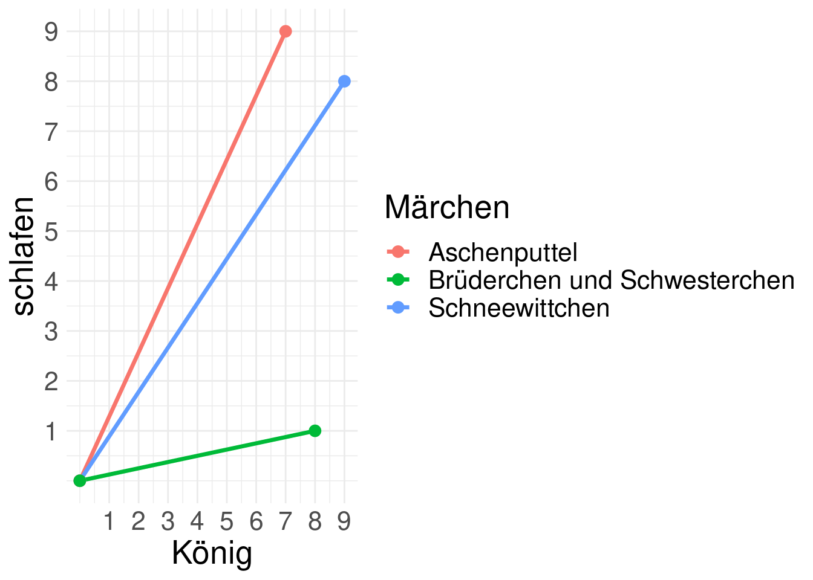

library(dplyr)
library(tidytext)
library(tm)
library(tools)
library(reshape2)
library(ggplot2)
library(text2vec)MäRchen: Text Mining mit den sieben Zwergen
Cosinus-Ähnlichkeit
Das letzte Mal haben Sie versucht, die (inhaltliche) Ähnlichkeit Ihrer Märchen intuitiv und von Hand zu bestimmen. Die cosine similarity ist eine Methode, um die inhaltliche Ähnlichkeit von Texten automatisch zu bestimmen.
Im Folgenden werden Sie (1) eine term-document-Matrix erzeugen, (2) die Ähnlichkeit zwischen Ihren Märchen errechnen und (3) die Ergebnisse in einer heatmap visualisieren. Anschließend versuchen Sie, (4) ähnliche deutsche, chinesische und arabische Märchen zu finden.
Pakete installieren
Bevor Sie beginnen, laden Sie folgende Pakete.
Laden Sie jetzt ein Sample aus dem Märchenkorpus.
src<-list.files("./data/sample/")
df<-data.frame(matrix(nrow = length(src), ncol = 2))
colnames(df)<-c("TEXT", "TITLE")
for(i in 1:length(src)){
df[i,1]<-readLines(paste("./data/sample/", src[i], sep = ""))
df[i,2]<-sub(".txt", "", src[i], fixed = TRUE)
}
sample<-as_tibble(df)
sampleterm-document-Matrix
Im ersten Schritt erzeugen Sie eine document-term-Matrix. In einer document-term-Matrix werden die documents (Texte, Märchen) in den Zeilen, die terms (Wörter) in den Spalten abgebildet. In den Zellen wird abgebildet, wie oft ein Wort in einem Text vorkommt.
Errechnen Sie zuerst die Worthäufigkeiten für jedes Märchen einzeln, d.h. zählen Sie die Wörter in jedem Märchen.
Hilfe
stopwords_df<-tibble(read.csv("./data/stopwords.csv"))
sample_freq<-sample %>%
unnest_tokens(WORD, TEXT, to_lower = FALSE) %>%
anti_join(stopwords_df, by = "WORD") %>%
dplyr::count(WORD, TITLE, sort = TRUE)
sample_freqDie folgende Funktion cast_dtm() macht aus Ihrem tibble eine document-term-Matrix. Schauen Sie sich die Matrix mit inspect() an und überprüfen Sie einige Werte von Hand.
sample_dtm<-sample_freq %>%
cast_dtm(TITLE, WORD, n)
tm::inspect(sample_dtm)Denkpause
Sie haben jetzt eine Märchen-Wörter-Matrix, die anzeigt, wie oft jedes Wort in jedem Märchen vorkommt. Sie möchten aber die inhaltliche Ähnlichkeit der Märchen bestimmen. Was könnten Sie tun?
Ähnlichkeit errechnen
Die Ähnlichkeit zwischen den Märchen bestimmen Sie als Cosinus-Ähnlichkeit (cosine similarity). Die cosine similarity ist unabhängig von der Textlänge.
Die Ähnlichkeit zwischen zwei Texten wird dabei als Winkel zwischen zwei Vektoren in einem mehrdimensionalen Raum ausgedrückt. Jedes Wort bildet eine Dimension. Jedes Märchen hat eine Position auf dieser Dimension, abhängig davon, wie häufig dieses Wort in diesem Text vorkommt. Jedes Märchen ist dann als Vektor im Raum abbildbar. Der Winkel zwischen den Vektoren (Märchen) zeigt ihre Ähnlichkeit (ihre ähnliche Orientierung im Wörter-Raum) an.
Vereinfachtes Beispiel mit zwei Wörtern (Dimensionen) und drei Märchen (Vektoren).
Warning: Using `size` aesthetic for lines was deprecated in ggplot2 3.4.0.
ℹ Please use `linewidth` instead.
| Titel | König | schlafen |
|---|---|---|
| Schneewittchen | 9 | 8 |
| Aschenputtel | 7 | 9 |
| Brüderchen und Schwesterchen | 8 | 1 |
Die cosine similarity wird automatisch ermittelt mit der Funktion sim2(). Der Cosinus varriert zwischen 0 und 1: 0 bedeutet keine Ähnlichkeit, 1 bedeutet größtmögliche Ähnlichkeit (Identität).
sample_cos<-sample_dtm %>%
as.matrix() %>%
sim2(method = "cosine")
sample_cosHeatmap
Die Ergebnisse sind in dieser Form nur schwierig interpretierbar. Veranschaulichen Sie die Ergebnisse in einer heatmap.
sample_cos<-melt(sample_cos)
colnames(sample_cos)<-c("TITLE1", "TITLE2", "value")
ggplot(data = sample_cos, aes(x=TITLE1, y=TITLE2 , fill=value, text=value)) +
geom_tile(color = "white") +
geom_text(aes(TITLE2, TITLE1, label = round(value,1)), color = "white", size = 4) +
theme_minimal() +
theme(axis.text.x = element_text(angle = 45, vjust = 1, hjust = 1)) +
coord_fixed() +
labs(x ="", y="", fill = "Cosinus")Vergleichen Sie die Ergebnisse der Ähnlichkeitsanalyse mit Ihren intuitiven Urteilen. Stimmen sie überein? Finden Sie die errechneten Werte brauchbar?
Märchen vergleichen
Zum Ende versuchen Sie, die Ähnlichkeit zwischen deutschen und chinesischen Volksmärchen zu ermitteln. Finden Sie die zwei ähnlichsten Märchen.
Laden Sie zuerst beide Märchen-Korpora mit folgendem Code.
src<-list.files("./data/corpus-grimm/")
df<-data.frame(matrix(nrow = length(src), ncol = 3))
colnames(df)<-c("TEXT", "TITLE", "SOURCE")
for(i in 1:length(src)){
df[i,1]<-readLines(paste("./data/corpus-grimm/", src[i], sep = ""))
df[i,2]<-sub(".txt", "", src[i], fixed = TRUE)
df[i,3]<-"Grimm"
}
grimm<-as_tibble(df)
src<-list.files("./data/corpus-wilhelm/")
df<-data.frame(matrix(nrow = length(src), ncol = 3))
colnames(df)<-c("TEXT", "TITLE", "SOURCE")
for(i in 1:length(src)){
df[i,1]<-readLines(paste("./data/corpus-wilhelm/", src[i], sep = ""))
df[i,2]<-sub(".txt", "", src[i], fixed = TRUE)
df[i,3]<-"Wilhelm"
}
wilhelm<-as_tibble(df)
corpus<-tibble(rbind(grimm, wilhelm))Wiederholen Sie jetzt die Schritte (1) (document-term-Matrix errechnen) und (2) (Cosinus-Ähnlichkeit der Märchen errechnen). Das Ergebnis ist eine Matrix mit Ähnlichkeitswerten für alle Märchen-Paare. Wenn Sie Hilfe brauchen, klicken Sie auf Hilfe.
Hilfe
stopwords_df<-tibble(read.csv("./data/stopwords.csv"))
corpus_words<-corpus %>%
unnest_tokens(WORD, TEXT, to_lower = FALSE) %>%
anti_join(stopwords_df, by = "WORD") %>%
dplyr::count(WORD, TITLE, SOURCE, sort = TRUE)
corpus_dtm<-corpus_words %>%
cast_dtm(TITLE, WORD, n)
corpus_cos<-corpus_dtm %>%
as.matrix() %>%
sim2(method = "cosine")Sie haben eine Matrix mit den Ähnlichkeitswerten für alle Märchen-Paare erzeugt. Die Herkunft der Märchen (deutsch oder chinesisch oder arabisch) ist dabei verloren gegangen. Sie müssen sie wieder eintragen, mit folgendem Code.
corpus_cos<-corpus_cos %>%
melt() %>%
rename("TITLE1" = 1, "TITLE2" = 2) %>%
left_join(corpus[,2:3], by = c("TITLE1" = "TITLE")) %>%
left_join(corpus[,2:3], by = c("TITLE2" = "TITLE"))Jetzt wählen Sie alle deutsch-chinesischen-arabischen Märchen-Paare aus (filter()), ordnen sie die Ergebnisse nach Ähnlichkeit (arrange()) und zeigen Sie den ersten Eintrag an (slice_head()).
sim<-corpus_cos %>%
filter(SOURCE.x != SOURCE.y) %>%
arrange(-value) %>%
slice_head(n = 1)
sim
diff<-corpus_cos %>%
filter(SOURCE.x != SOURCE.y) %>%
arrange(-value) %>%
slice_tail(n = 1)
diffDie Analyse hat ergeben, dass dieses deutsche und dieses chinesische Märchen sich inhaltlich am ähnlichsten bzw. unähnlichsten sind. Lesen und vergleichen Sie die Märchen, um dieses Ergebnis zu überprüfen.